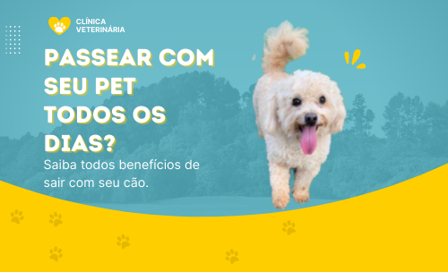

28 JAN 22
1

9 motivos para não deixar o passeio de lado
Passear com cachorro é mais que um momento de lazer ou um horário destinado para o animal fazer as necessidades fisiológicas, é um ato de cuidado e amor. Ter um animal requer muita responsabilidade e algumas horas dedicadas...